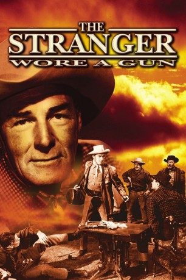
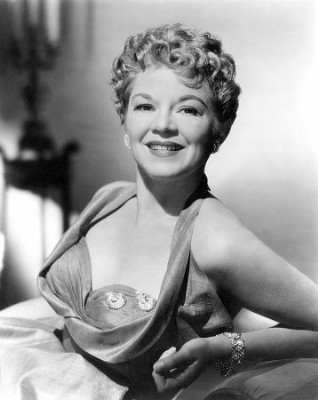
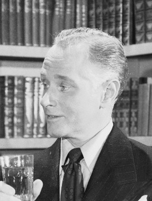
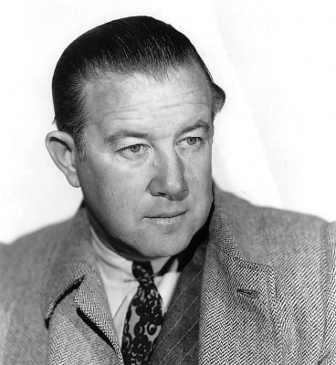
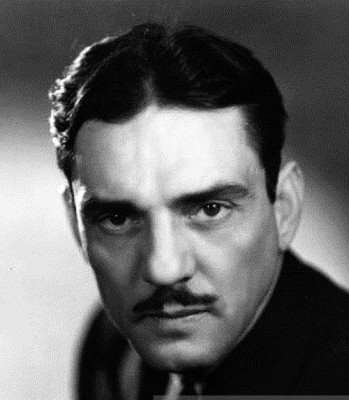
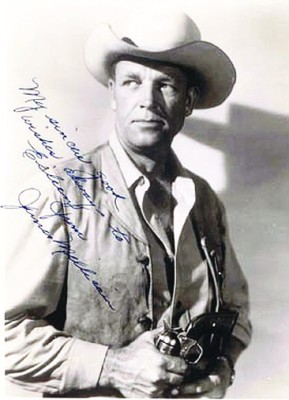
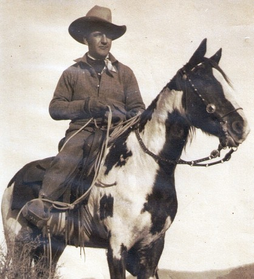
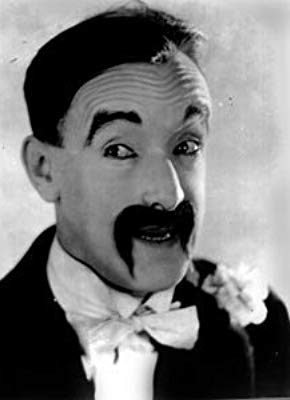
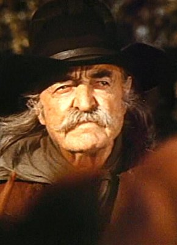

#7738 Der Schweigsame Fremde
Alternativ: The Stranger Wore a Gun
 
 IMDB-Wertung: 5.9 / 10
IMDB-Wertung: 5.9 / 10  Metascore: 0
Metascore: 0 
Irgendwo in Jeff Travis' abenteuerlicher Vergangenheit gibt es ein dunkles Kapitel. Es umschließt jene Zeit, in der er als Geheimkundschafter für den Süden gekämpft hat. Er tat es aus Idealismus, bis er eines Tages merkte, dass etwas nicht ganz sauber war bei der Geschichte. Da gab er seinen gefährlichen Job auf, schloss sich der Armee der Staaten an und machte den Rest des Krieges als ehrlicher Soldat mit. Heute, wo Jeff Travis mit Josie Sullivan, die eine leidenschaftliche Glücksspielerin ist, ein kleines Schifffahrtsunternehmen auf dem Mississippi betreibt, hängt ihm die Sache von damals noch nach.
Jahr: 1953
Dauer: 82 Minuten
FSK: 16
Land: USA Studio: Columbia PicturesTonspuren:
Untertitel:
Auflösung: 1080p (1440x1080) Größe: 6707 MB
Genre: Krieg, Western
Regisseur: André De Toth
Drehbuch: Kenneth Gamet
Soundtrack: Mischa Bakaleinikoff
Darsteller:
 Randolph Scott als Jeff Travis
Randolph Scott als Jeff Travis-  Claire Trevor als Josie Sullivan
- Joan Weldon als Shelby Conroy
-  George Macready als Jules Mourret
- Alfonso Bedoya als Degas
 Lee Marvin als Dan Kurth
Lee Marvin als Dan Kurth Ernest Borgnine als Bull Slager
Ernest Borgnine als Bull Slager Pierre Watkin als Jason Conroy
Pierre Watkin als Jason Conroy- Joseph Vitale als Shorty
- Clem Bevans als Jim Martin
 Victor Adamson als Barfly (uncredited)
Victor Adamson als Barfly (uncredited) Richard Alexander als Townsman (uncredited)
Richard Alexander als Townsman (uncredited)- Roscoe Ates als Jake Hooper - Stage Driver (uncredited)
 Bob Burns als Barfly (uncredited)
Bob Burns als Barfly (uncredited)- Edward Earle als Jeb - Martin's Friend (uncredited)
 Franklyn Farnum als Stagecoach Passenger (uncredited)
Franklyn Farnum als Stagecoach Passenger (uncredited)- Terry Frost als Riverboat Poker Player (uncredited)
 Frank Hagney als Deputy Sheriff (uncredited)
Frank Hagney als Deputy Sheriff (uncredited)- Carol Henry als Guerrilla Raider (uncredited)
-  Al Hill als Rafe - Ex-Soldier (uncredited)
 Reed Howes als Harve Comis (uncredited)
Reed Howes als Harve Comis (uncredited)- Knox Manning als Opening Narrator (uncredited)
-  Francis McDonald als Frank (uncredited)
 Harold Miller als Riverboat Passenger (uncredited)
Harold Miller als Riverboat Passenger (uncredited)-  James Millican als William Clarke Quantrill (uncredited)
-  Kansas Moehring als Degas Man (uncredited)
 Jack Mower als Poker Player (uncredited)
Jack Mower als Poker Player (uncredited) Forbes Murray als Riverboat Passenger (uncredited)
Forbes Murray als Riverboat Passenger (uncredited) Frank O'Connor als Stagecoach Passenger (uncredited)
Frank O'Connor als Stagecoach Passenger (uncredited) Artie Ortego als Barfly (uncredited)
Artie Ortego als Barfly (uncredited) Jack Perrin als Barfly (uncredited)
Jack Perrin als Barfly (uncredited)-  'Snub' Pollard als Barfly (uncredited)
- Herbert Rawlinson als Man on Riverboat Stairs (uncredited)
 Cosmo Sardo als Riverboat Passenger (uncredited)
Cosmo Sardo als Riverboat Passenger (uncredited)-  Tom Smith als Townsman (uncredited)
- Guy Teague als Posse Man (uncredited)
 Jack Tornek als Guerrilla Raider (uncredited)
Jack Tornek als Guerrilla Raider (uncredited) Blackie Whiteford als Riverboat Passenger (uncredited)
Blackie Whiteford als Riverboat Passenger (uncredited) Guy Wilkerson als Ike - Station Agent (uncredited)
Guy Wilkerson als Ike - Station Agent (uncredited)- Bob Woodward als Degas Man (uncredited)
- Rayford Barnes als Raider Todd / Townsman (uncredited)
- Dick Benjamin als Minor Role (uncredited)
- Barry Brooks als Undetermined Role (uncredited)
 George Bruggeman als Riverboat Passenger (uncredited)
George Bruggeman als Riverboat Passenger (uncredited)- Tap Canutt als Henchman (uncredited)
- Diana Dawson als Mother on Stagecoach (uncredited)
 Frank Ellis als Prescott Townsman (uncredited)
Frank Ellis als Prescott Townsman (uncredited)- Edith Evanson als Mrs. Martin (uncredited)
- Rudy Germane als Henchman (uncredited)
- Sam Harris als Riverboat Passenger (uncredited)
Datei: X:\HD-Western-1900-1959\Schweigsame Fremde, Der (1953, FSK16, 1440x1080).mkv seit 15.12.2017
Festplatte: HD Eastern+Western
 Es gibt insgesamt 98 Filme in der Gruppe 'HD-Western-1900-1959'
Es gibt insgesamt 98 Filme in der Gruppe 'HD-Western-1900-1959'